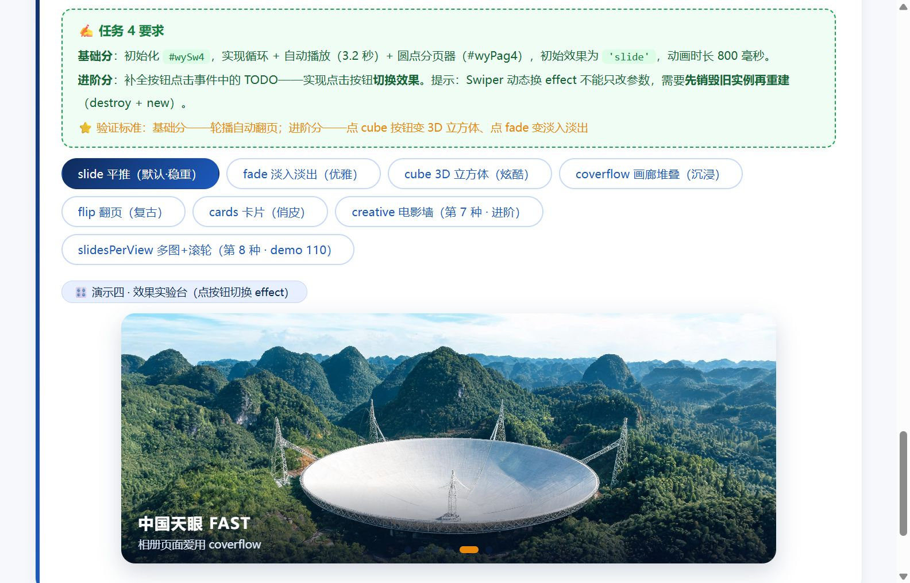
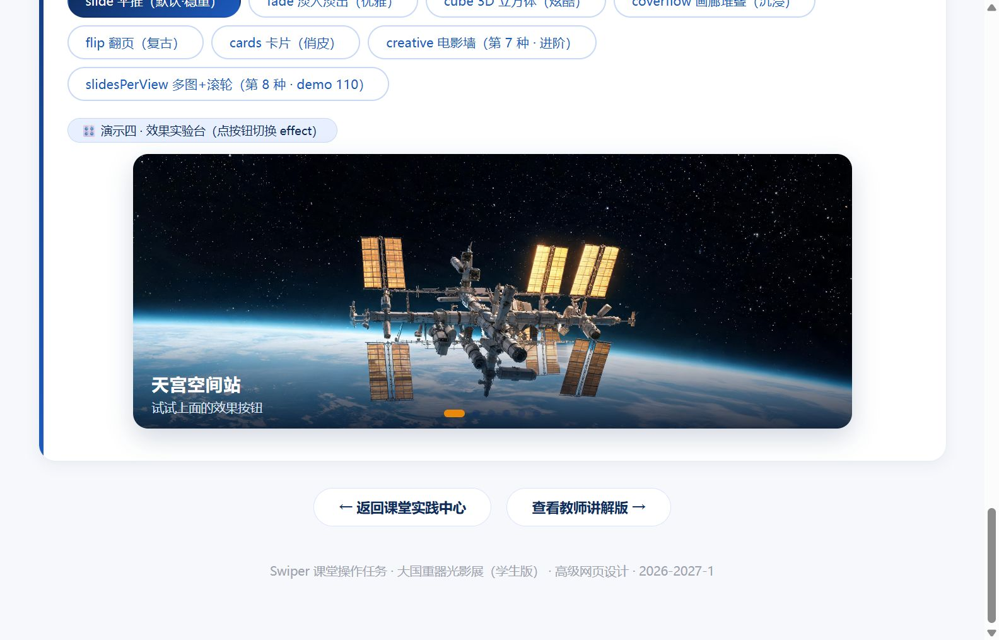
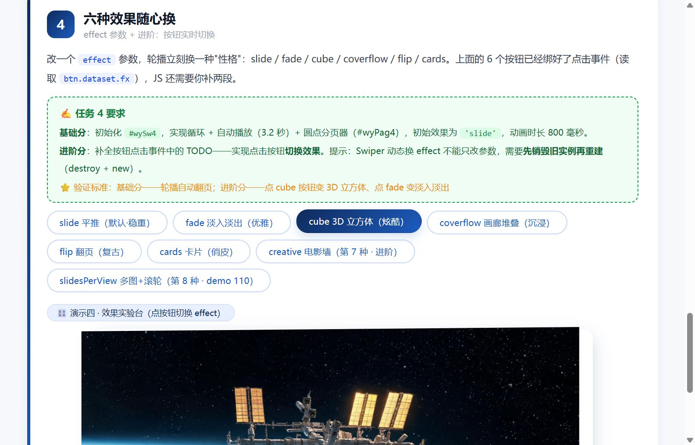

验证对象：nmh_prompt.md 中 2026-11-05 的两条日志（14:31 配置要求 / 14:42 手动操作不停播）——每条截图配一句话结论，逐项对照。
请生成 new Swiper('#wySw4', {...}) 的 Swiper 配置：开启无缝循环；自动翻页间隔 3200ms，不停止自动播放；分页器为可点击圆点；初始/默认切换效果为 cube。要求 4 项：loop / delay 3200 不停止 / 圆点可点击 / 初始 cube
用户手动操作后自动播放不停止要求 1 项：手动交互（拖动 / 点圆点）后 autoplay 不停止
python -m http.server 8321 启动静态服务器，浏览器打开 swiper-task.html，
通过控制台直接读取 wySw4.params（loop / autoplay / pagination / effect）与 wySw4.autoplay.running、wySw4.realIndex 实测取证。

一句话结论：实测 loop=true、autoplay.delay=3200、disableOnInteraction=false、pagination.clickable=true 全部命中日志①要求，轮播正常自动翻页——配置无误。

一句话结论：点击分页圆点后 realIndex 由 1 跳到 5、wySw4.autoplay.running 保持 true，4.5 秒后轮播继续自动翻页——日志②的"手动操作后不停止"经实测成立（disableOnInteraction:false 生效）。

一句话结论（错漏项）：实测初始 effect="slide" ≠ 日志①要求的 "cube"——这是后续课堂任务卡明确要求"初始效果为 slide（默认·稳重）"导致的任务演进偏差，cube 效果已作为按钮可一键切换（如图），不算缺陷但与日志要求不一致。
| 日志要求 | 实测结果 | 结论 |
|---|---|---|
| 开启无缝循环 | loop: true | ✓ 符合 |
| 自动翻页间隔 3200ms | autoplay.delay: 3200 | ✓ 符合 |
| 不停止自动播放 | disableOnInteraction: false | ✓ 符合 |
| 分页器为可点击圆点 | pagination.clickable: true，点击可跳转 | ✓ 符合 |
| 初始/默认切换效果为 cube | effect: "slide"（cube 已做成可切换按钮） | ⚠ 偏差（任务演进） |
| 手动操作后自动播放不停止（日志②） | 点圆点后 realIndex 1→5、autoplay.running === true | ✓ 符合 |